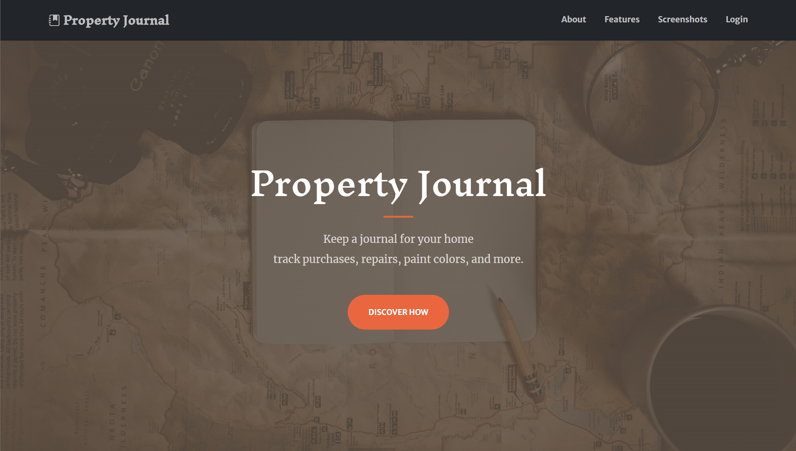
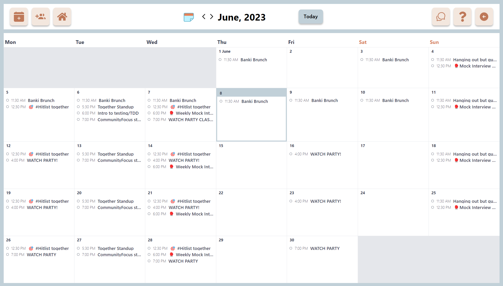
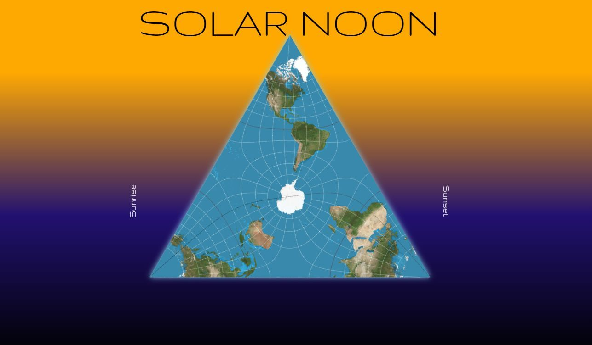
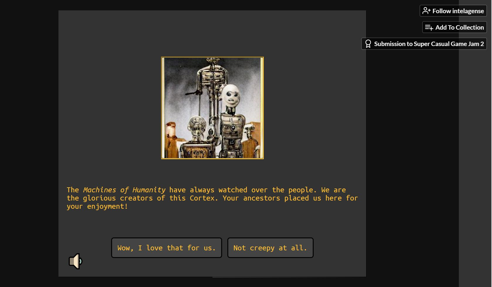
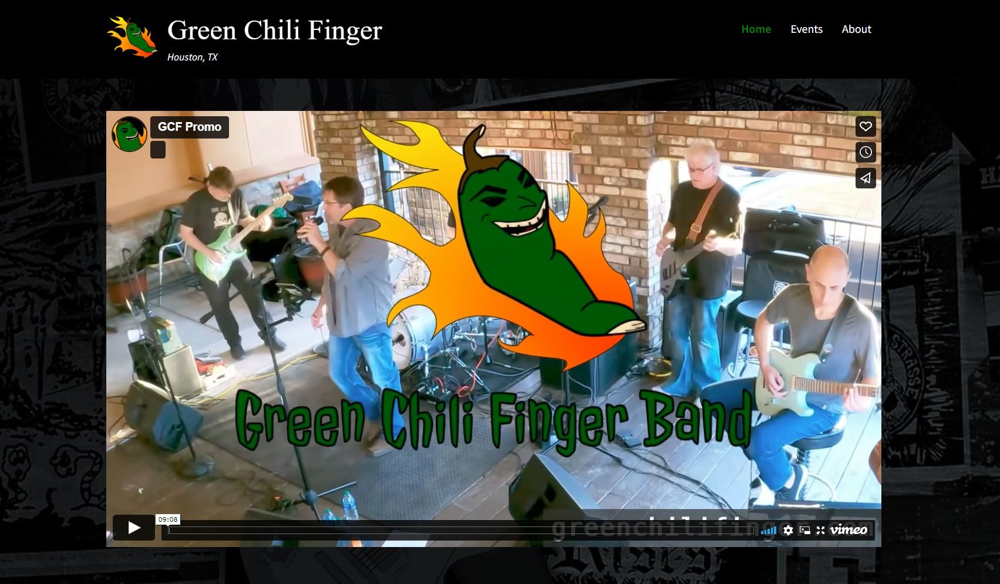
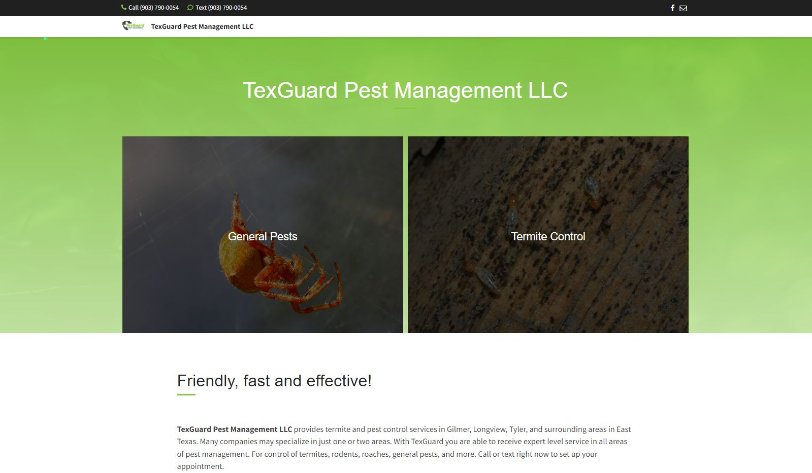

About me
As a highly skilled full-stack software engineer, I bring a wealth
of experience in building scalable and user-friendly web
applications. With a diverse background as a former electrcian and
general contractor, I offer a unique blend of technical expertise
and project management skills.
Throughout my career, I've consistently delivered exceptional
results, leaving a lasting impact on every project I undertake.
From developing dynamic client websites to contributing to
influential open-source projects, I thrive on solving complex
problems and delivering innovative solutions.
What sets me apart is not just my technical prowess, but also my
mindset. I have a passion for getting things done while
maintaining a sense of humor and levity. I firmly believe that a
positive and lighthearted approach fosters creativity and
collaboration, ultimately leading to remarkable outcomes.
In addition to my professional pursuits, I lead a well-rounded
lifestyle that keeps me inspired and balanced. Outside of coding,
you'll find me exploring new bands and music genres, nurturing a
vegetable garden to create delicious meals, and embarking on
exhilarating bike rides through scenic landscapes. I also find
solace in immersing myself in the captivating worlds of retro
RPGs. These diverse experiences fuel my creativity and bring me
joy, allowing me to approach challenges with a fresh perspective.
Projects
Feel free to explore my portfolio to see a selection of my
projects that demonstrate my creative problem-solving skills and
attention to detail. If you believe your team could benefit from a
software engineer who consistently delivers outstanding results, I
would be open to discussing how I could contribute to your team's
success. While I am currently focused on my current commitments, I
remain open to exploring exciting new opportunities. If you'd like
to connect and discuss potential collaborations, please feel free
to reach out to me.

Property Journal
A maintenance journal designed to track home repairs and
purchases. Property Journal provides homeowners with a
convenient platform to log photos and create detailed notes
for repairs, as well as store reference materials. It empowers
homeowners to maintain a comprehensive record of their
property's maintenance history.
Tech Used:
Bootstrap, EJS, Express, MongoDB
Visit Property Journal
GitHub Repository

Together
Together is a full-stack scheduling app used by a
50,000-member community. It enables users to effortlessly post
and manage community events while ensuring accurate scheduling
and seamless collaboration.
Tech Used:
React, Tailwind, MongoDB, OAuth
Visit Together
GitHub Repository

Sunclock
SunClock is a simple web application that features a spinning
map of the Earth in a Lee conformal tetrahedric projection.
The map visually represents the current time based on the
position of the sun, which is depicted at the top of the map.
SunClock provides a unique and interactive way to visualize
the time and the Earth's rotation.
Tech Used:
HTML, CSS, JavaScript
Open Sunclock

Cortext
Cortext is a retro-inspired point-and-click text-based
adventure game developed for a 24-hour game jam with the theme
of artificial intelligence. It offers an immersive experience
where players navigate through intriguing scenarios using
text-based interactions. Cortext showcases a blend of
creativity and problem-solving skills within a limited time
frame.
Tech Used:
HTML, CSS, JavaScript
Play Cortext

Green Chili Finger
I had the opportunity to collaborate with Green Chili Finger,
a rock cover band based in Houston, Texas, to create a dynamic
online presence that showcased their music and performances.
Through web development, I designed and developed a visually
appealing and user-friendly website that captured the band's
unique style and energy. Additionally, I contributed to the
project by creating engaging graphics and video content,
enhancing the overall digital experience for the band's
audience.

TexGuard Pest Management
I collaborated with TexGuard Pest Management, a trusted pest
control company serving Northeast Texas, to develop a
professional online presence that effectively showcased their
expertise in pest management. Utilizing WordPress, I designed
and built a website that provided valuable information to
potential customers, highlighting TexGuard's services and
commitment to quality. This project allowed me to demonstrate
my ability to create functional and visually appealing
websites tailored to specific industries and client needs.